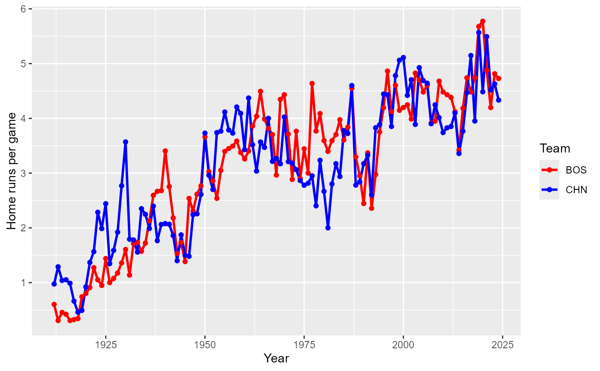
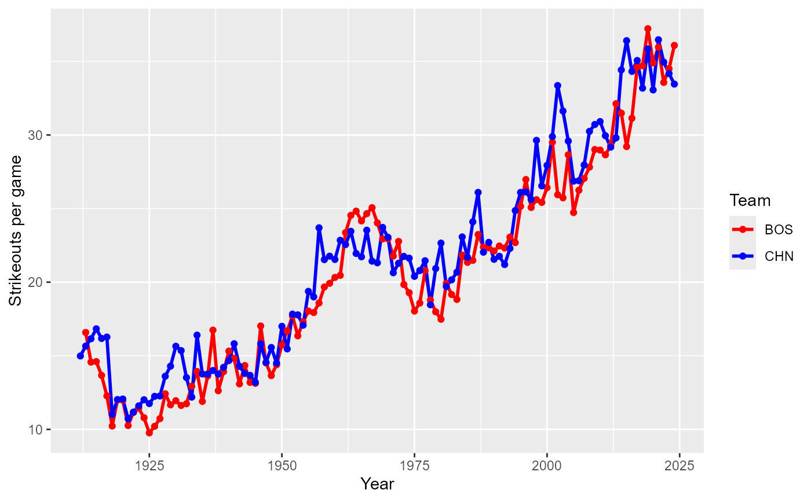

Teams table
Teams.RdYearly statistics and standings for teams
Usage
data(Teams)Format
A data frame with 3075 observations on the following 48 variables.
yearIDYear
lgIDLeague; a factor with levels
AAALFLNLPLUAteamIDTeam; a factor
franchIDFranchise (links to
TeamsFranchisestable)divIDTeam's division; a factor with levels
CEWRankPosition in final standings
GGames played
GhomeGames played at home
WWins
LLosses
DivWinDivision Winner (Y or N)
WCWinWild Card Winner (Y or N)
LgWinLeague Champion(Y or N)
WSWinWorld Series Winner (Y or N)
RRuns scored
ABAt bats
HHits by batters
X2BDoubles
X3BTriples
HRHomeruns by batters
BBWalks by batters
SOStrikeouts by batters
SBStolen bases
CSCaught stealing
HBPBatters hit by pitch
SFSacrifice flies
RAOpponents runs scored
EREarned runs allowed
ERAEarned run average
CGComplete games
SHOShutouts
SVSaves
IPoutsOuts Pitched (innings pitched x 3)
HAHits allowed
HRAHomeruns allowed
BBAWalks allowed
SOAStrikeouts by pitchers
EErrors
DPDouble Plays
FPFielding percentage
nameTeam's full name
parkName of team's home ballpark
attendanceHome attendance total
BPFThree-year park factor for batters
PPFThree-year park factor for pitchers
teamIDBRTeam ID used by Baseball Reference website
teamIDlahman45Team ID used in Lahman database version 4.5
teamIDretroTeam ID used by Retrosheet
Source
Lahman, S. (2025) Lahman's Baseball Database, 1871-2024, 2025 version, https://sabr.org/lahman-database/
Examples
data(Teams)
library("dplyr")
library("tidyr")
# Add some selected measures to the Teams data frame
# Restrict to AL and NL in modern era
teams <- Teams %>%
filter(yearID >= 1901 & lgID %in% c("AL", "NL")) %>%
group_by(yearID, teamID) %>%
mutate(TB = H + X2B + 2 * X3B + 3 * HR,
WinPct = W/G,
rpg = R/G,
hrpg = HR/G,
tbpg = TB/G,
kpg = SO/G,
k2bb = SO/BB,
whip = 3 * (H + BB)/IPouts)
# Function to create a ggplot by year for selected team stats
# Both arguments are character strings
yrPlot <- function(yvar, label)
{
require("ggplot2")
ggplot(teams, aes_string(x = "yearID", y = yvar)) +
geom_point(size = 0.5) +
geom_smooth(method="loess") +
labs(x = "Year", y = paste(label, "per game"))
}
## Run scoring in the modern era by year
yrPlot("rpg", "Runs")
#> Warning: `aes_string()` was deprecated in ggplot2 3.0.0.
#> ℹ Please use tidy evaluation idioms with `aes()`.
#> ℹ See also `vignette("ggplot2-in-packages")` for more information.
#> `geom_smooth()` using formula = 'y ~ x'
## Home runs per game by year
yrPlot("hrpg", "Home runs")
#> `geom_smooth()` using formula = 'y ~ x'
## Total bases per game by year
yrPlot("tbpg", "Total bases")
#> `geom_smooth()` using formula = 'y ~ x'
## Strikeouts per game by year
yrPlot("kpg", "Strikeouts")
#> `geom_smooth()` using formula = 'y ~ x'
#> Warning: Removed 16 rows containing non-finite outside the scale range
#> (`stat_smooth()`).
#> Warning: Removed 16 rows containing missing values or values outside the scale range
#> (`geom_point()`).
## Plot win percentage vs. run differential (R - RA)
ggplot(teams, aes(x = R - RA, y = WinPct)) +
geom_point(size = 0.5) +
geom_smooth(method="loess") +
geom_hline(yintercept = 0.5, color = "orange") +
geom_vline(xintercept = 0, color = "orange") +
labs(x = "Run differential", y = "Win percentage")
#> `geom_smooth()` using formula = 'y ~ x'
## Plot attendance vs. win percentage by league, post-1980
teams %>% filter(yearID >= 1980) %>%
ggplot(., aes(x = WinPct, y = attendance/1000)) +
geom_point(size = 0.5) +
geom_smooth(method="loess", se = FALSE) +
facet_wrap(~ lgID) +
labs(x = "Win percentage", y = "Attendance (1000s)")
#> `geom_smooth()` using formula = 'y ~ x'
## Teams with over 4 million attendance in a season
teams %>%
filter(attendance >= 4e6) %>%
select(yearID, lgID, teamID, Rank, attendance) %>%
arrange(desc(attendance))
#> # A tibble: 9 × 5
#> # Groups: yearID, teamID [9]
#> yearID lgID teamID Rank attendance
#> <int> <fct> <fct> <int> <int>
#> 1 1993 NL COL 6 4483350
#> 2 2008 AL NYA 3 4298655
#> 3 2007 AL NYA 2 4271083
#> 4 2006 AL NYA 1 4248067
#> 5 2005 AL NYA 1 4090696
#> 6 1993 AL TOR 1 4057947
#> 7 2008 NL NYN 2 4042045
#> 8 1992 AL TOR 1 4028318
#> 9 1991 AL TOR 1 4001527
## Average season HRs by park, post-1980
teams %>%
filter(yearID >= 1980) %>%
group_by(park) %>%
summarise(meanHRpg = mean((HR + HRA)/Ghome), nyears = n()) %>%
filter(nyears >= 10) %>%
arrange(desc(meanHRpg)) %>%
head(., 10)
#> # A tibble: 10 × 3
#> park meanHRpg nyears
#> <chr> <dbl> <int>
#> 1 Yankee Stadium III 5.07 14
#> 2 The Ballpark at Arlington 4.87 11
#> 3 Great American Ball Park 4.81 20
#> 4 Rogers Centre 4.75 19
#> 5 Angel Stadium of Anaheim 4.73 13
#> 6 Oriole Park at Camden Yards 4.71 33
#> 7 Coors Field 4.64 30
#> 8 Target Field 4.57 15
#> 9 Citizens Bank Park 4.56 21
#> 10 Miller Park 4.55 20
## Home runs per game at Fenway Park and Wrigley Field,
## the two oldest MLB parks, by year. Fenway opened in 1912.
teams %>%
filter(yearID >= 1912 & teamID %in% c("BOS", "CHN")) %>%
mutate(hrpg = (HR + HRA)/Ghome) %>%
ggplot(., aes(x = yearID, y = hrpg, color = teamID)) +
geom_line(size = 1) +
geom_point() +
labs(x = "Year", y = "Home runs per game", color = "Team") +
scale_color_manual(values = c("red", "blue"))

## Ditto for total strikeouts per game
teams %>%
filter(yearID >= 1912 & teamID %in% c("BOS", "CHN")) %>%
mutate(kpg = (SO + SOA)/Ghome) %>%
ggplot(., aes(x = yearID, y = kpg, color = teamID)) +
geom_line(size = 1) +
geom_point() +
labs(x = "Year", y = "Strikeouts per game", color = "Team") +
scale_color_manual(values = c("red", "blue"))
#> Warning: Removed 1 row containing missing values or values outside the scale range
#> (`geom_line()`).
#> Warning: Removed 1 row containing missing values or values outside the scale range
#> (`geom_point()`).

if (FALSE) { # \dontrun{
if(require(googleVis)) {
motion1 <- gvisMotionChart(as.data.frame(teams),
idvar="teamID", timevar="yearID", chartid="gvisTeams",
options=list(width=700, height=600))
plot(motion1)
#print(motion1, file="gvisTeams.html")
# Merge with avg salary for years where salary is available
teamsal <- Salaries %>%
group_by(yearID, teamID) %>%
summarise(Salary = sum(salary, na.rm = TRUE)) %>%
select(yearID, teamID, Salary)
teamsSal <- teams %>%
filter(yearID >= 1985) %>%
left_join(teamsal, by = c("yearID", "teamID")) %>%
select(yearID, teamID, attendance, Salary, WinPct) %>%
as.data.frame(.)
motion2 <- gvisMotionChart(teamsSal, idvar="teamID", timevar="yearID",
xvar="attendance", yvar="salary", sizevar="WinPct",
chartid="gvisTeamsSal", options=list(width=700, height=600))
plot(motion2)
#print(motion2, file="gvisTeamsSal.html")
}
} # }